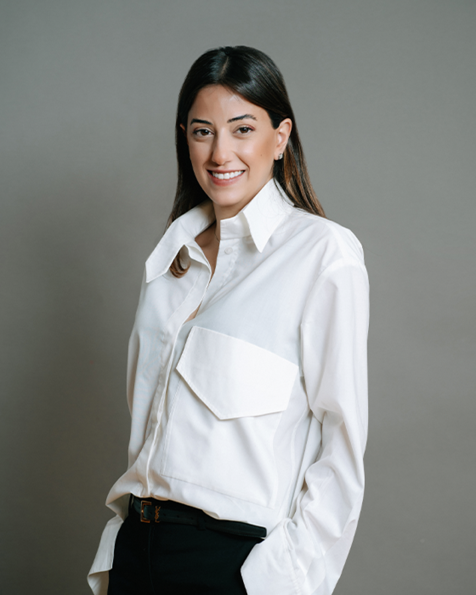

ქეთევან კალანდარიშვილი
დირექტორი
ქეთევან კალანდარიშვილი მეგალაბის გუნდს 2023 წელს შემოუერთდა. მანამდე ის საქართველოს ჯანდაცვის ჯგუფში (GHG) 2015 წლიდან ინვესტორებთან ურთიერთობისა და ფინანსური სახსრების მოძიების მიმართულებით მუშაობდა, ხოლო 2017 წელს ამავე განყოფილების ხელმძღვანელი გახდა. GHG-ში მუშაობის დაწყებამდე ქეთევანი იყო Ernst & Young-ის უფროსი აუდიტორი. ქეთევანი ფლობს კავკასიის ბიზნესის სკოლის (Caucasus School of Business) ბიზნესის ადმინისტრირების ბაკალავრის ხარისხს და ასევე 2025 წელს დაასრულა სტენფორდის აღმასრულებელი პროგრამა (Stanford Graduate School of Business Executive Program - SEP) სტენფორდის ბიზნესის სამაგისტრო სკოლაში.